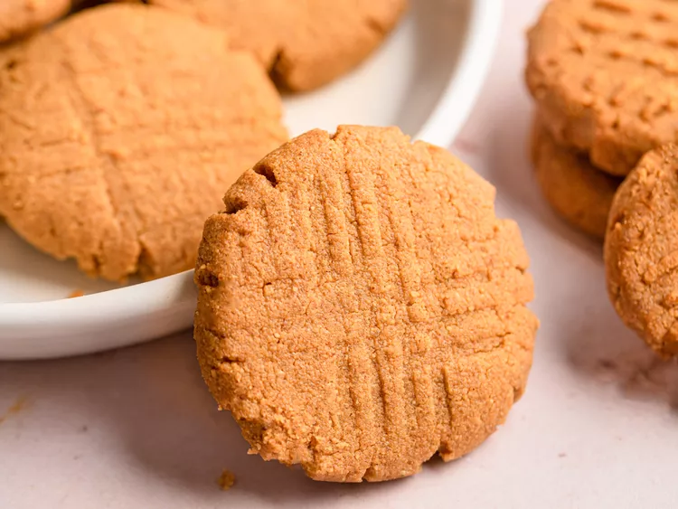

Simple Recipe for Beginner: Peanut Butter Cookies .
Here is an easy and quick peanut butter cookie recipe we have provided for you to try out!

Ingredients:
- 1 cup of Peanut Butter
- 1 cup of Sugar
- 1 Egg
Instructions:
- Preheat the oven to 175°C and prepare your ingredients.
- Put in all the ingredients in a bowl and mix it with a electric mixer until smooth and creamy.
- Grab a good amount of the dough before shaping it into small ball.s
- Place the shaped balls in a tray that is covered with a baking sheet but make sure to give shape 2 inches in between each.
- Flatten each dough with a fork, making a criss-cross pattern. this makes it look more nicer.
- Bake in the oven for 10 minutes until the endges of the cookie is firm.
- Let the cookies cool down before removing them from the tray and now you can enjoy!
Notes:
- Add on crunchy peanut butter would also work well and adds on extra texture and flavour!
- If the dough seems too dry, add in 1 to 2 teaspoon of warm water or add in small amount of peanut butter until the dough is the right consistency.
- For a sparkly finishing touch, sprinkle some course sugar on top of the cookie before baking.